Real2Sem2Real: 3D Semantic Augmentations for Robot Learning from a Single Human RGB Demonstration
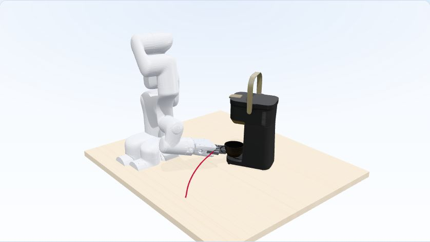
Live: one human video, thousands of robot demonstrations. Episodes our pipeline generated in IsaacSim, replayed in your browser on the xArm7. Switch between R2R2R, which varies only the poses of the one demonstrated mug and coffee machine, and R2Sem2R, which also swaps in digital cousins, and run nine environments in parallel. In every episode the carry replays the mug trajectory tracked from the single human video (inset). Drag to orbit.
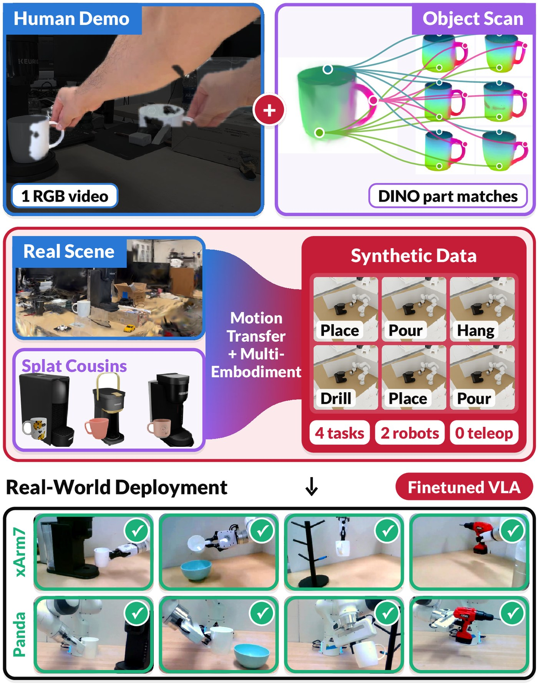
Teleoperation pays for every demonstration, and every new object instance pays again. Real2Sem2Real (R2Sem2R) turns one human RGB video into thousands of robot demonstrations across the object instances of a category, with no depth sensor and no teleoperation. It tracks the demonstrated objects, generates digital cousins of them from photographs, aligns the cousins to the demonstration by their semantics, and replays the demonstration for every cousin pairing in simulation.
- One monocular RGB video per task, no depth and no teleoperation
- Digital cousins generated from one or a few photographs
- Semantic alignment of whole objects and of functional regions such as a coffee machine's tray
- Evaluated on two robots and four tasks
Why one human video?
A person can demonstrate a task with a phone camera in seconds. Turning that video into robot training data has meant either a depth sensor, overlaying a robot onto 2D video, or generating data only for the exact objects that were demonstrated. A policy trained on one mug and one coffee machine does not transfer to the next mug.
Existing real-to-sim pipelines also break at three recurring points: the object track drifts, the recovered grasp collides with the object, and the reconstructed meshes look nothing like the real scene.
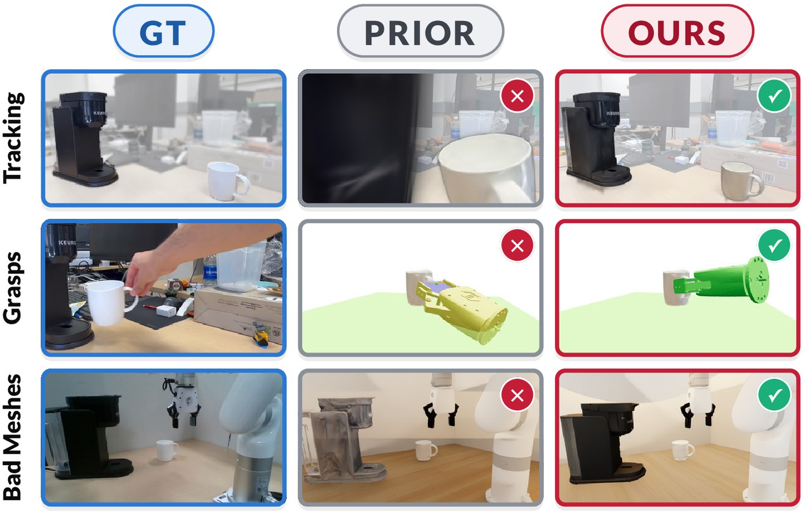
How does R2Sem2R work?
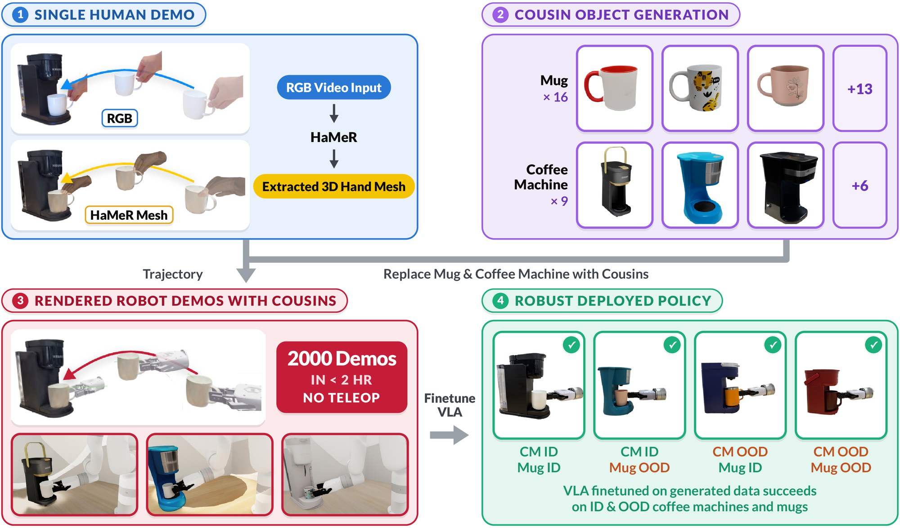
Method overview. From a single human demonstration with no teleoperation, we recover the mug's trajectory, generate a 16 × 9 library of cousin mugs and coffee machines, and render thousands of robot demonstrations in simulation. The resulting policy succeeds on in- and out-of-distribution objects.
An RGB-only 4D tracker built on DINO-distilled Gaussian splats follows each object's pose through the human video.
SAM3 and SAM3D turn one or a few photographs and a text prompt into a cousin splat and mesh. The photos can come from the real world, an online store, or an image generator.
DINOv3 features distilled into every splat align each cousin to the demonstrated object, by the whole object for a mug and by the functional region, such as the tray, for a coffee machine.
The demonstration is replayed for every cousin pairing in IsaacSim, with kinematic replay, or MuJoCo, with contact physics, and a VLA policy is trained on the result.
The demonstration, lifted into 3D
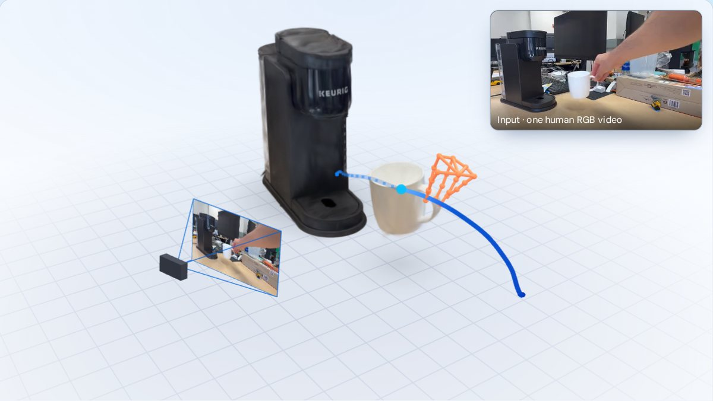
Interactive: one human video, lifted into 3D. Gaussian splats of the coffee machine and the mug, scanned with a phone. The mug follows the 6-DoF path our tracker recovered from the single RGB video (inset), placed relative to the machine, whose own track also gives the phone's camera pose; the orange skeleton is the demonstrator's hand from HaMeR. Cousins carries cousin mugs along the same path through their semantic alignment to the scanned mug. The scan was taken separately from the video, so only the two objects are kept and the tabletop is drawn in. Drag to orbit.
Semantic alignment on all four tasks
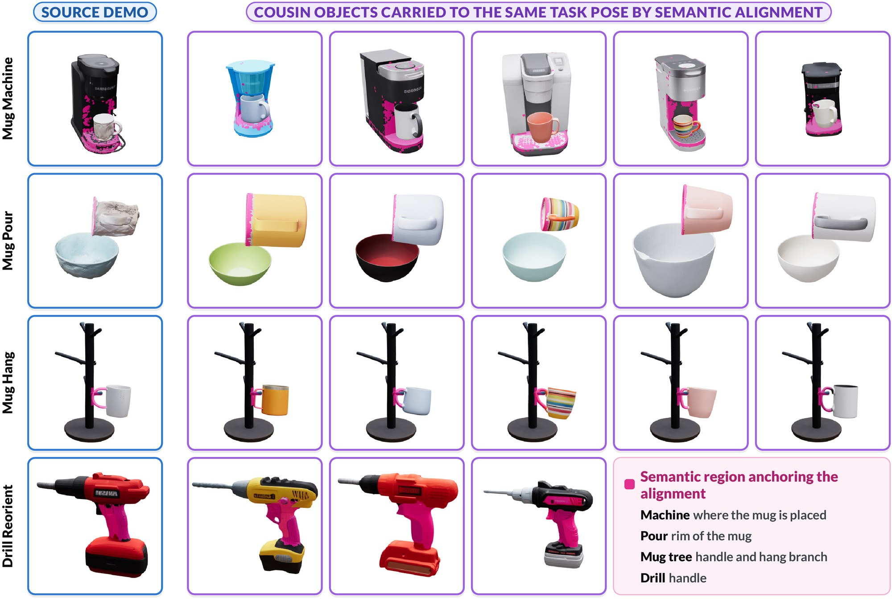
Cousin objects carried to the demonstrated pose. Left, the scanned objects of the source demonstration; right, cousins aligned to it. Pink marks the region that anchors the alignment: the tray of the coffee machine, the rim of the poured mug, the handle with the branch it hangs on, and the drill's handle. Cousins that differ in shape, size and color still land on the tray, tip over the bowl, or hang on the branch as demonstrated.
Why the alignment works: distilled DINOv3 features
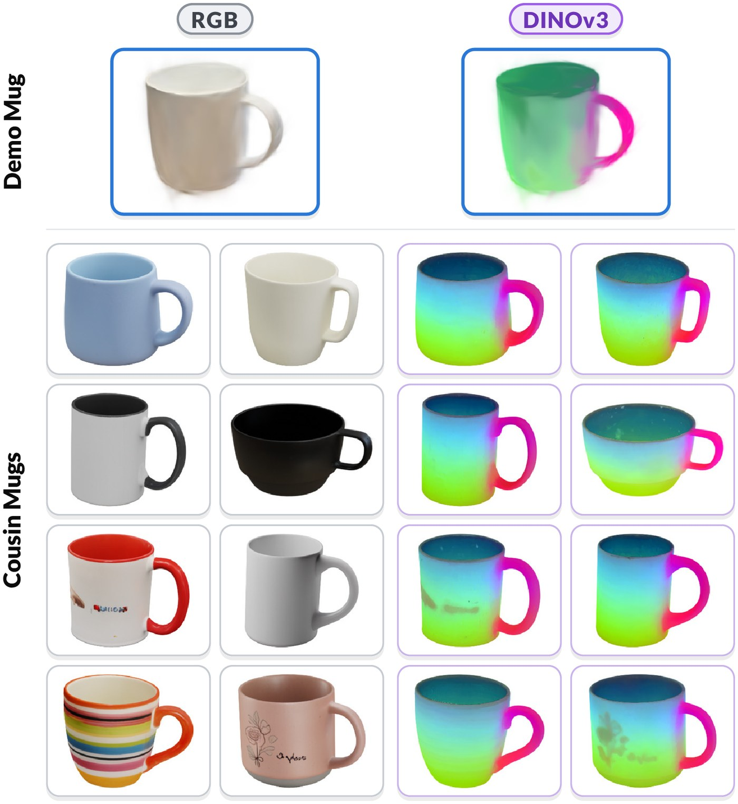
Recovering the robot grasp from the human hand
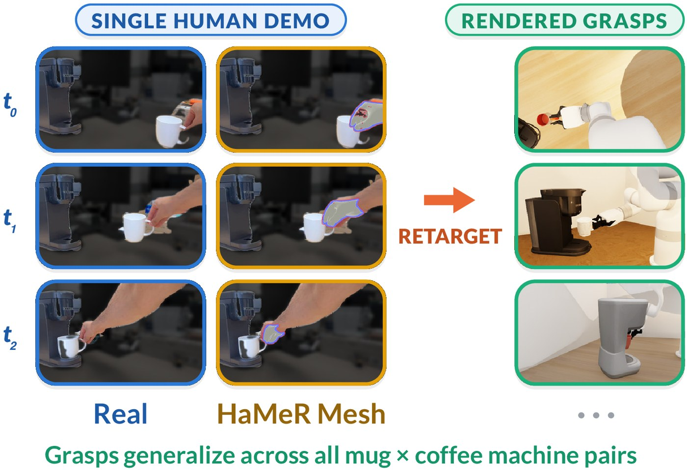
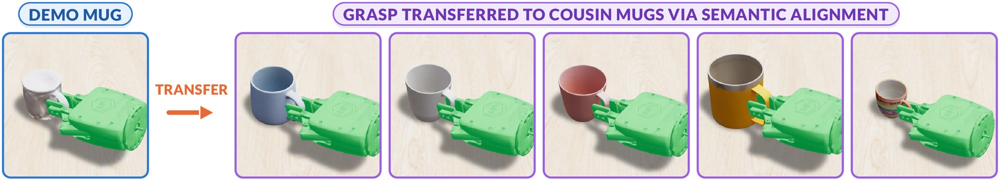
Building the simulated scene
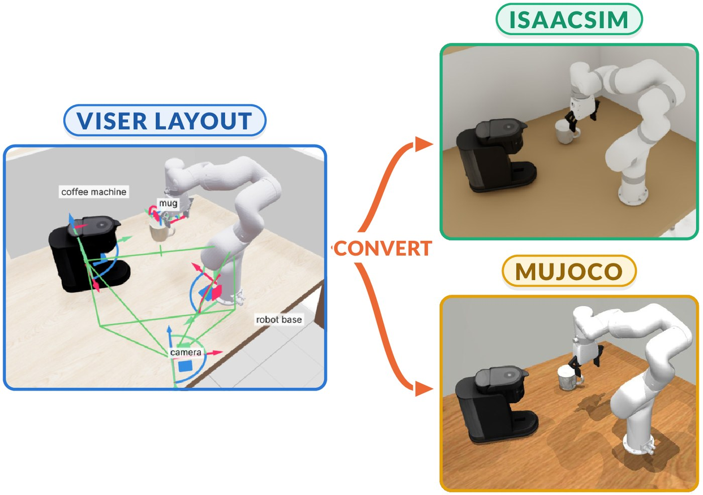
Aligning the simulated camera to the real one
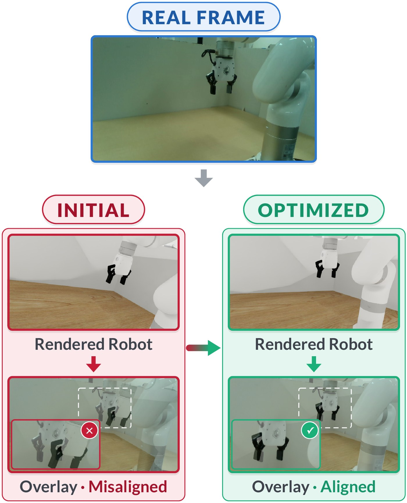
Generated episodes in IsaacSim and MuJoCo
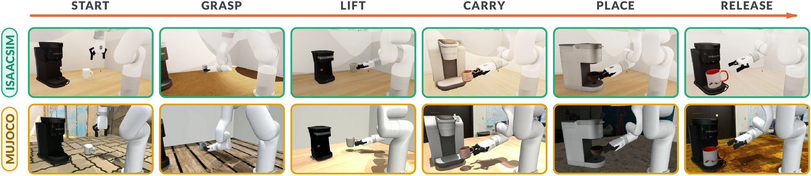
Live contact physics in your browser
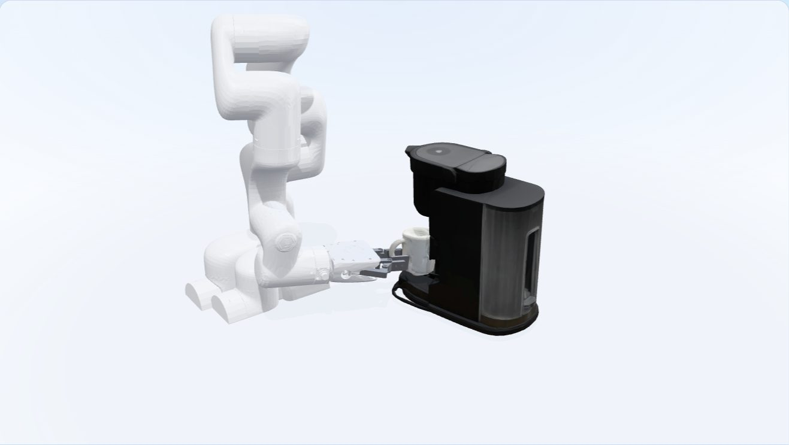
Interactive: one of our generated MuJoCo episodes, simulated live. MuJoCo, compiled to WebAssembly, re-simulates the scene the episode was generated in. The robot replays the episode's recorded joint targets at 10 Hz while the mug, the table and the coffee machine are simulated with contact; as in our data generation, a soft weld holds the mug once the finger pads close on the handle and releases it on the tray. Drag the mug to push it. The replay is open loop, so a push before the grasp makes the robot miss, which is why the generator keeps only episodes whose mug comes to rest on the tray. Each of the six object pairs ends on the tray when replayed here. The arrows show the forces on the mug, longer for larger forces: from the fingers in red, the table in blue and the coffee machine in orange. While the hand carries the mug, the red arrows at the fingertips show the force the weld applies to hold it. The panel gives the totals; resting on the table or the tray, or carried at a steady pace, they add up to the mug's weight, 2.9 N.
How well do we track objects?
Every later stage depends on the object track, so we compare against the two closest alternatives on the seven objects of our four tasks. Every method gets the same object model, and every method is scored by per-frame mask IoU against the same SAM2 masks.
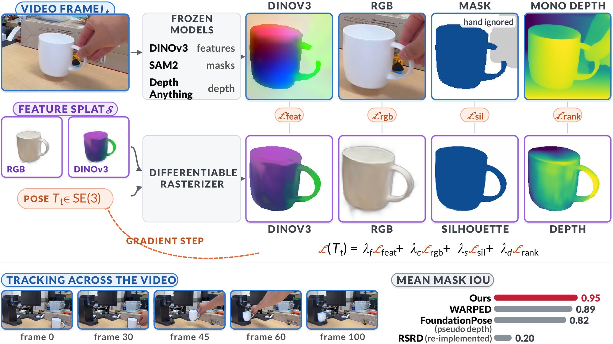
Render-and-compare tracking. Frozen DINOv3, SAM2 and Depth Anything turn each video frame into RGB, feature, mask and depth targets, with the hand ignored. The DINOv3-distilled splat is rendered at the current pose into the same four channels, and the four losses update the pose by gradient steps. The plot gives per-frame mask IoU on the coffee-machine video, with each method's mean in the legend.
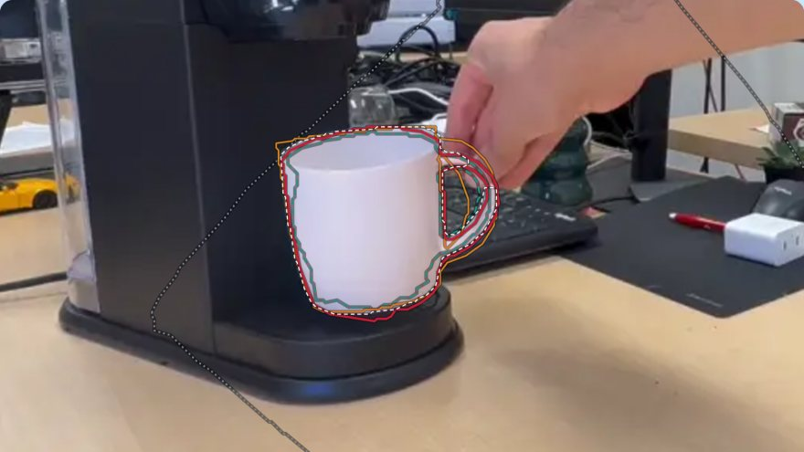
Interactive: scrub through the demonstration. Each outline is the object rendered at one tracker's estimated pose in that frame, and the timeline gives its mask IoU against the SAM2 mask (dashed), frame by frame; the means match the table below. Our track stays on the mug through the grasp, the carry and the placement. FoundationPose with monocular depth falls behind once the hand picks the mug up, and RSRD's silhouette is far too large from the first frame. RSRD was run on the mug only.
Initializing the track
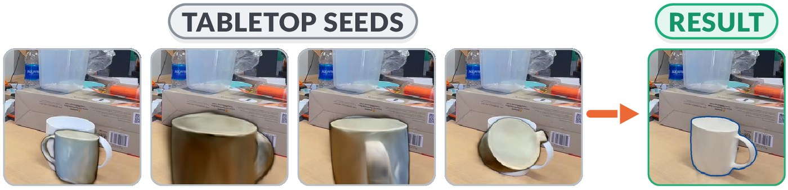
| Object | Ours | WARPED | FoundationPose |
|---|---|---|---|
| Mug, to coffee machine | 0.949 | 0.890 | 0.820 |
| Coffee machine | 0.916 | 0.894 | 0.814 |
| Mug, to tree | 0.904 | 0.000 | 0.210 |
| Tree stand | 0.840 | 0.712 | 0.295 |
| Mug, pour | 0.935 | 0.900 | 0.245 |
| Bowl, pour | 0.982 | 0.849 | 0.450 |
| Drill | 0.864 | 0.525 | 0.704 |
| Mean | 0.913 | 0.681 | 0.505 |
FoundationPose with calibrated depth
We also give FoundationPose depth calibrated against our own splat, rendered at our tracker's poses. These conditions borrow distance from our tracker, so they are upper bounds on FoundationPose rather than independent results, and our tracker still leads.
| Object | Ours | Per-frame fit | Per-video fit | Raw depth |
|---|---|---|---|---|
| Mug, to coffee machine | 0.949 | 0.872 | 0.897 | 0.820 |
| Coffee machine | 0.916 | 0.864 | 0.872 | 0.814 |
| Mug, to tree | 0.904 | 0.888 | 0.864 | 0.210 |
| Tree stand | 0.840 | 0.759 | 0.757 | 0.295 |
| Mug, pour | 0.935 | 0.895 | 0.579 | 0.245 |
| Bowl, pour | 0.982 | 0.963 | 0.972 | 0.450 |
| Drill | 0.864 | 0.826 | 0.819 | 0.704 |
| Mean | 0.913 | 0.867 | 0.823 | 0.505 |
How well does it work?
We fine-tune the π0.5 vision-language-action model on three kinds of data and evaluate on real robots: teleoperation, 150 real demonstrations collected across several objects; R2R2R, 2,000 generated episodes of the single demonstrated object pair, following Real2Render2Real; and R2Sem2R, 2,000 generated episodes across digital cousins.
The four tasks
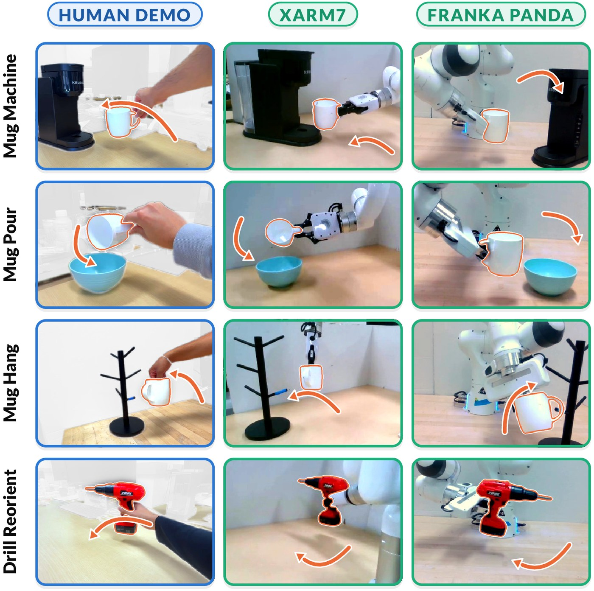
xArm7
Franka Panda
Watch the rollouts
Interactive: real-robot rollouts, in sync. The same task on the same robot, run by a policy trained on 2,000 generated episodes of the single demonstrated object pair (R2R2R) and by one trained on 2,000 episodes across digital cousins (R2Sem2R). Clips are in recording order, skipping ones in which a person steps into view, and end before the scene is reset; for the Franka Panda placement with R2Sem2R we also skipped one failure and one trial with an unclear outcome, so the three clips shown sit closer to its measured rate. The bars give the success rate over every real-robot trial.
Digital cousins beat a single object pair on every task and robot evaluated so far, by 28 to 54 points, and match or beat teleoperation on most, with no human time beyond the one demonstration.
Full results table
Object diversity is what transfers
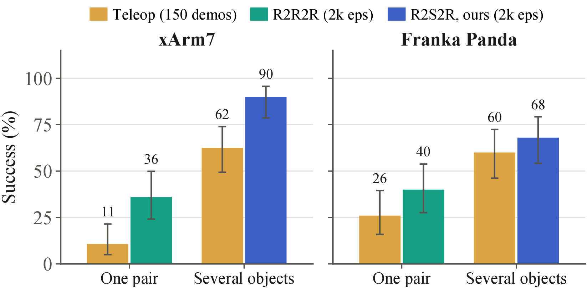
More generated data keeps helping
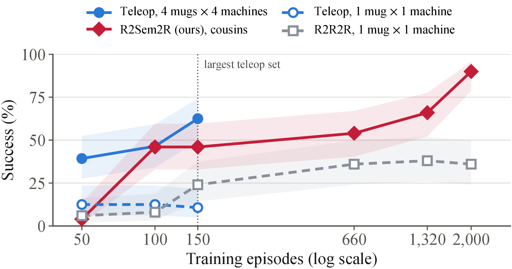
What the data costs to collect
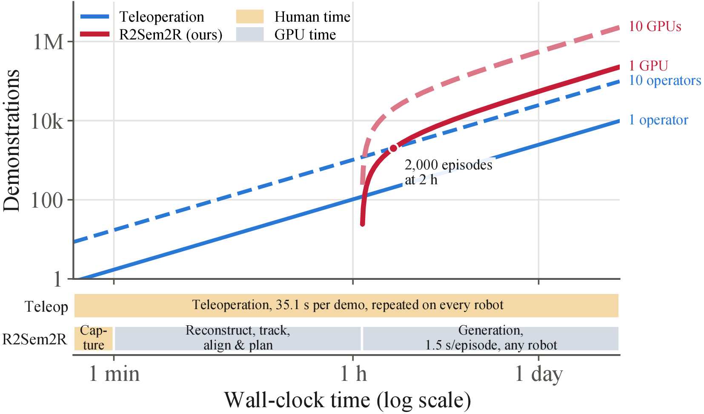
Try it with your own mug
Cousins can come from a single photograph. This simplified version runs entirely in your browser: pick a mug, or upload a side-view photo of yours and tap it. SlimSAM segments it, the silhouette is rebuilt as a 3D mug, the demonstrated grasp moves onto its handle, and the xArm7 replays the demonstration with your mug.
Hardware

Limitations
Every cousin needs at least one photograph. Generating a category from text alone is future work.
Monocular depth is up to scale, which we resolve per scene from the recovered ground plane, so the demonstration must take place on a known supporting surface.
Grasp recovery needs a moment where the hand holds the object rigidly. Sliding or tool use without a grasp falls outside its scope.
Articulated objects such as drawers, doors and cabinets are the natural next step.
Q&A
Why use RGB video only?
A phone always has a camera, but not always a depth camera. Working from RGB alone means any phone video of a person doing the task can become robot data.
What is a digital cousin?
A 3D model of another object of the same category, such as a different mug, generated from one or a few photographs and a text prompt. SAM3 segments the object and SAM3D generates a splat and a textured mesh; ten cousins take about seven minutes on one GPU. The photos can be taken in the real world, found in an online store, or generated by an image model.
How is this different from Real2Render2Real?
R2R2R augments the poses of the objects that were demonstrated. R2Sem2R adds semantic augmentation: the same demonstration is transferred to new object instances. Trained on the same number of episodes, the cousins raise mug placement on the xArm7 from 36% to 90%.
Why align objects by semantics rather than shape?
Cousins differ in shape, so lining up their geometry does not line up the parts that matter. DINOv3 features distilled into each splat let us match corresponding parts. For placement objects, the alignment is weighted toward the functional region, such as a coffee machine's tray, rather than the whole object.
Which simulators do you use?
Both IsaacSim, with kinematic replay rendered in parallel on the GPU, and MuJoCo, which simulates contact physics and keeps an episode only if the object comes to rest at its goal.